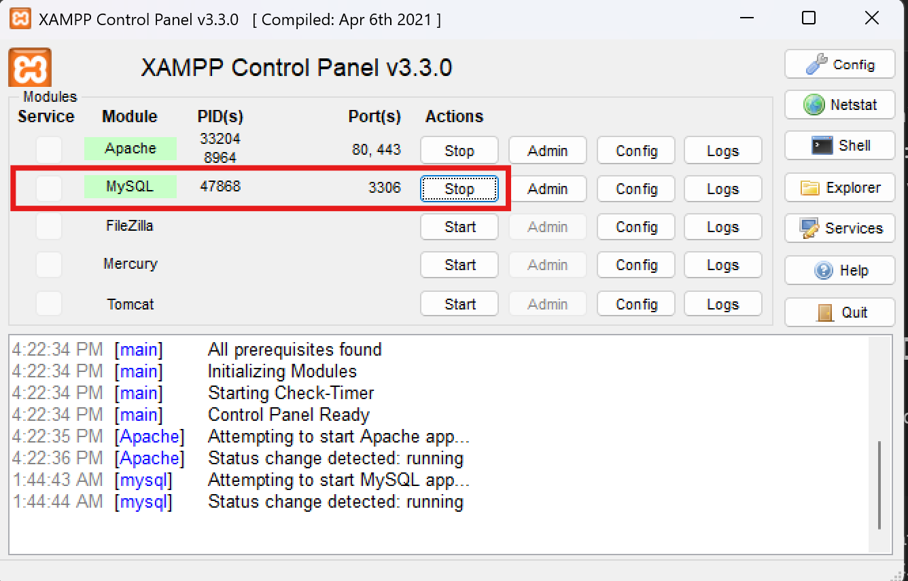
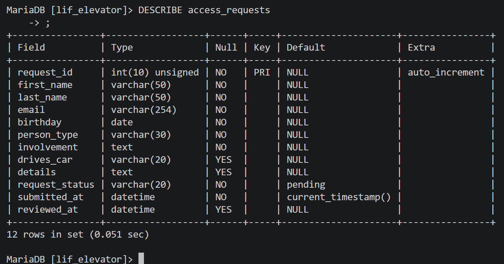

Daily Logbook Entry
Logbook Entry, 2026-07-11 by Nick Kapuka
Looked into SQL setup for my own interest. Waiting for RY for full update.
Entry Snapshot
Date: 2026-07-11
Author: Nick Kapuka
Focus: SQL, Database
Entry overview
Schema and database setup
Key details
Purpose: Look into SQL and DB setup.Component or tool: XAMPP server and DB setup; MariaDB.Result: Setup two out of three tables desired.Team contribution: Working on this solo as I have yet to receive any DB progress from RY at this time.
SQL and MariaDB
Began to setup SQL and MariaDB by enabling it in XAMPP:

MariaDB enabled through the XAMPP control panel
After, enter the DB:
mysql -u root -h 127.0.0.1 -P 3306
And create an SQL database:
CREATE DATABASE lif_elevator;
USE lif_elevator;
Then, make the the access_requests table/schema
MariaDB [lif_elevator]> CREATE TABLE access_requests (
-> request_id INT UNSIGNED NOT NULL AUTO_INCREMENT,
-> first_name VARCHAR(50) NOT NULL,
-> last_name VARCHAR(50) NOT NULL,
-> email VARCHAR(254) NOT NULL,
-> birthday DATE NOT NULL,
-> person_type VARCHAR(30) NOT NULL,
-> involvement TEXT NOT NULL,
-> drives_car VARCHAR(20),
-> details TEXT,
-> request_status VARCHAR(20) NOT NULL DEFAULT 'pending',
-> submitted_at DATETIME NOT NULL DEFAULT CURRENT_TIMESTAMP,
-> reviewed_at DATETIME,
-> PRIMARY KEY (request_id)
-> ) ENGINE = InnoDB;
After running that, the DB can be checked:
Query OK, 0 rows affected (0.047 sec)
MariaDB [lif_elevator]> SHOW TABLES;
+------------------------+
| Tables_in_lif_elevator |
+------------------------+
| access_requests |
+------------------------+
1 row in set (0.001 sec)
MariaDB [lif_elevator]>
Then, our entire DB can be seen as a table:
MariaDB [lif_elevator]> DESCRIBE access_requests
-> ;
+----------------+------------------+------+-----+---------------------+----------------+
| Field | Type | Null | Key | Default | Extra |
+----------------+------------------+------+-----+---------------------+----------------+
| request_id | int(10) unsigned | NO | PRI | NULL | auto_increment |
| first_name | varchar(50) | NO | | NULL | |
| last_name | varchar(50) | NO | | NULL | |
| email | varchar(254) | NO | | NULL | |
| birthday | date | NO | | NULL | |
| person_type | varchar(30) | NO | | NULL | |
| involvement | text | NO | | NULL | |
| drives_car | varchar(20) | YES | | NULL | |
| details | text | YES | | NULL | |
| request_status | varchar(20) | NO | | pending | |
| submitted_at | datetime | NO | | current_timestamp() | |
| reviewed_at | datetime | YES | | NULL | |
+----------------+------------------+------+-----+---------------------+----------------+
12 rows in set (0.051 sec)
MariaDB [lif_elevator]>
In-case the formatting is weird, an image is provided:

MariaDB output confirming the access_requests table structure
After that, a user DB was made:
MariaDB [lif_elevator]> CREATE TABLE users (
-> user_id INT UNSIGNED NOT NULL AUTO_INCREMENT,
-> access_request_id INT UNSIGNED,
-> username VARCHAR(50) NOT NULL,
-> password_hash VARCHAR(255) NOT NULL,
-> email VARCHAR(254) NOT NULL,
-> user_role VARCHAR(20) NOT NULL DEFAULT 'user',
-> account_status VARCHAR(20) NOT NULL DEFAULT 'approved',
-> created_at DATETIME NOT NULL DEFAULT CURRENT_TIMESTAMP,
-> last_login_at DATETIME,
-> PRIMARY KEY (user_id),
-> UNIQUE (username),
-> UNIQUE (email),
-> CONSTRAINT fk_users_access_request
-> FOREIGN KEY (access_request_id)
-> REFERENCES access_requests(request_id)
-> ON UPDATE CASCADE
-> ON DELETE SET NULL
-> ) ENGINE = InnoDB;
Query OK, 0 rows affected (0.062 sec)
After, the table can be displayed:
MariaDB [lif_elevator]> DESCRIBE users;
+-------------------+------------------+------+-----+---------------------+----------------+
| Field | Type | Null | Key | Default | Extra |
+-------------------+------------------+------+-----+---------------------+----------------+
| user_id | int(10) unsigned | NO | PRI | NULL | auto_increment |
| access_request_id | int(10) unsigned | YES | MUL | NULL | |
| username | varchar(50) | NO | UNI | NULL | |
| password_hash | varchar(255) | NO | | NULL | |
| email | varchar(254) | NO | UNI | NULL | |
| user_role | varchar(20) | NO | | user | |
| account_status | varchar(20) | NO | | approved | |
| created_at | datetime | NO | | current_timestamp() | |
| last_login_at | datetime | YES | | NULL | |
+-------------------+------------------+------+-----+---------------------+----------------+
9 rows in set (0.044 sec)
MariaDB [lif_elevator]>
From this point on, I decided to go to bed and will continue on Monday, July 13th.
Please see NK_entry_2026-07-13 .
useful SQL commands to know:
mysql -u root -h 127.0.0.1 -P 3306
CREATE DATABASE lif_elevator;
USE lif_elevator;
SHOW DATABASES;
SHOW TABLES;
DESCRIBE access_requests;
SHOW CREATE TABLE access_requests;
Technical notes
Nothing of note.
Testing, results, or issues
Nothing of note; no direct testing in this entry as it was mere setup.